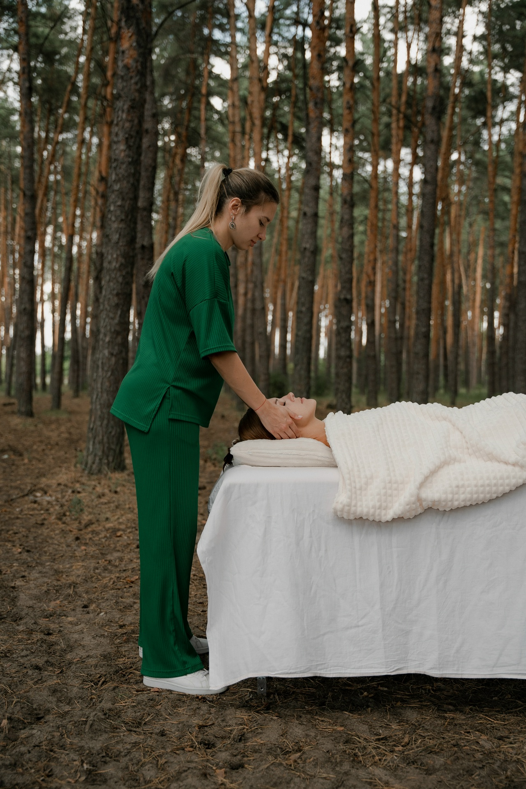
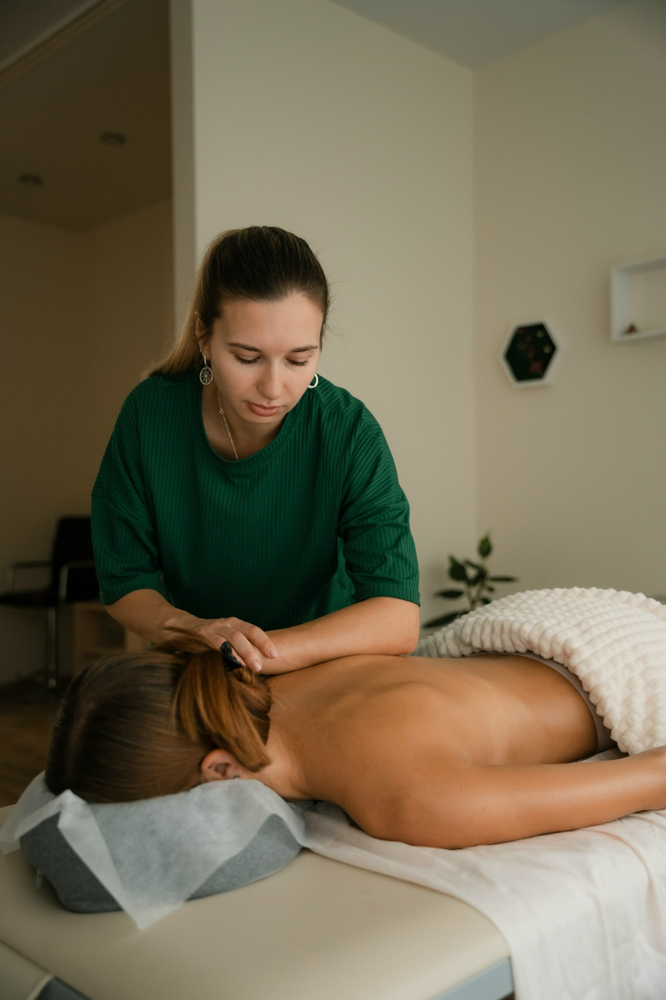

Глубокая и бережная работа с телом методом Ребалансинг. Диалог без слов — через мягкие, точные прикосновения. Туда, где тело держит усталость, напряжение и эмоции.

«Я не ломаю и не исправляю. Это очень бережный и глубокий диалог с вашим телом — через мягкие, точные прикосновения».
Ребалансинг — глубокая практика, которая возвращает ощущение, что вы дома в собственном теле. С помощью метода и знаний психосоматики я мягко нахожу и высвобождаю «замороженные» в теле эмоции.
Работа идёт на трёх уровнях одновременно:

Я выслушаю ваш запрос и задам вопросы — так, как это принято в Ребалансинге. Никто не торопится.
Мягкая диагностика через прикосновение и глубокое давление. Я «читаю» тело, нахожу зоны напряжения и помогаю им расслабиться.
Вы узнаете, какие паттерны зажимов я заметила, где тело «держит» усталость и эмоции — и с чего стоит начать дальше.
Беседа, мягкая диагностика через прикосновение и честная обратная связь. Вы прочувствуете метод на себе и поймёте, откликается ли он вам. Уйдёте с «картой» своего тела и пониманием, с чего начать.
Полноценная глубокая сессия: тело успевает пройти путь от поверхностного напряжения к глубокому расслаблению, от настороженности — к доверию и отпусканию. Состояние, которое остаётся с вами на дни.
«Нахожусь в работе у Натали уже около двух лет. Потрясающий мастер. Работа происходит очень мягко, бережно и глубоко. Доверяю себя только ей — считаю, что это лучшее вложение в себя и своё здоровье.»
Телесный терапевт, психосоматолог, специалист глубокой работы с телом методом «Ребалансинг».
Я верю, что тело хранит память о наших переживаниях — и что освобождение от телесных зажимов приводит к переменам в жизни. Тело — наш главный жизненный ресурс, и от его состояния зависит качество жизни.
Буду рада стать проводником для вас — в расслабленную, лёгкую жизнь и здоровое тело.